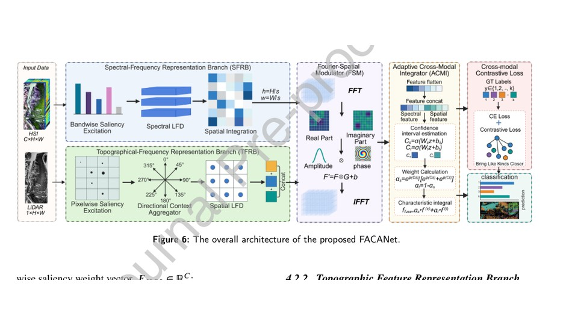
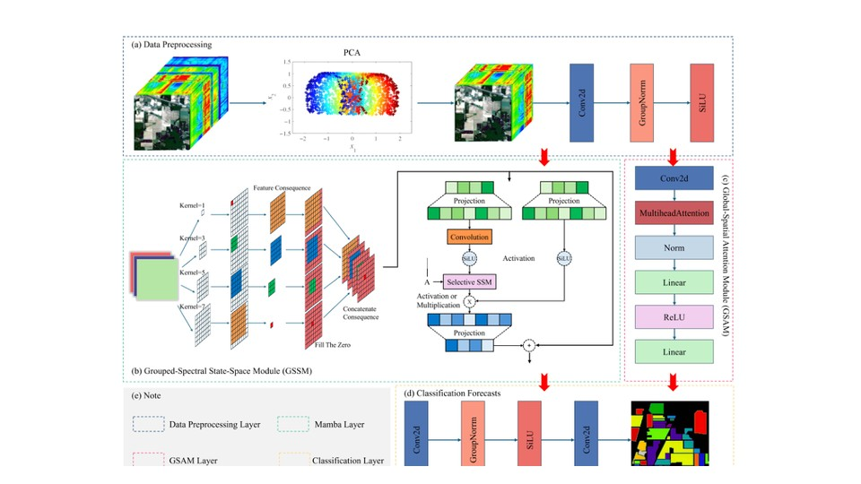
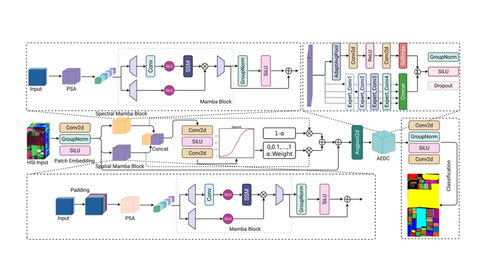
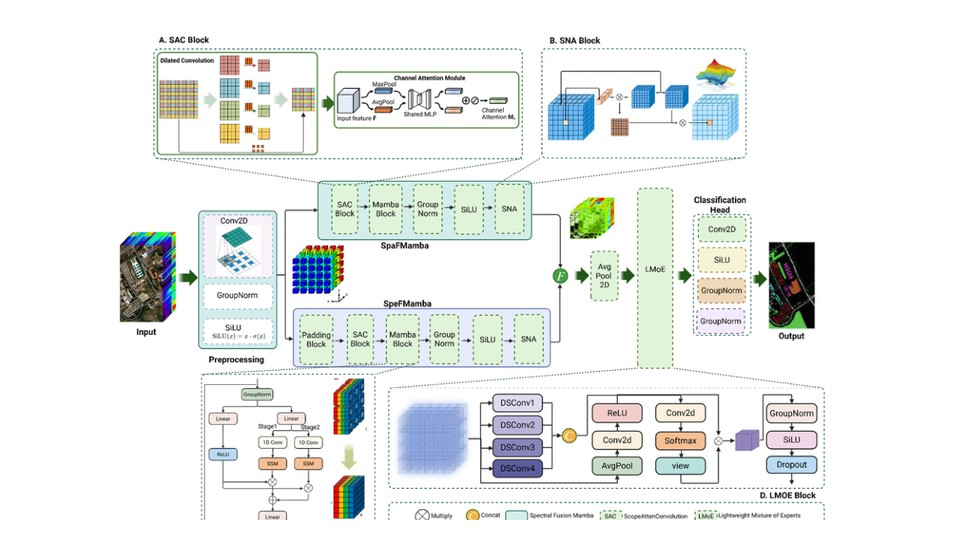
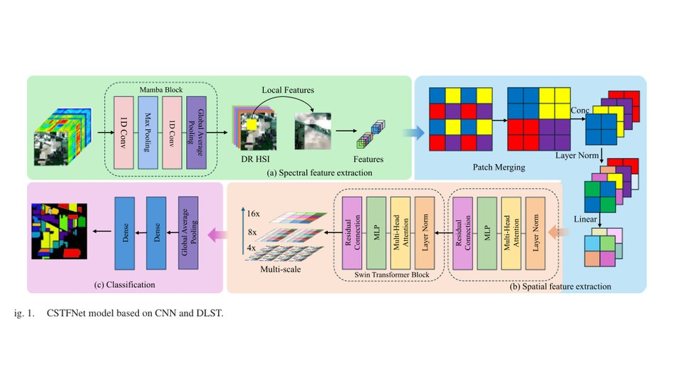
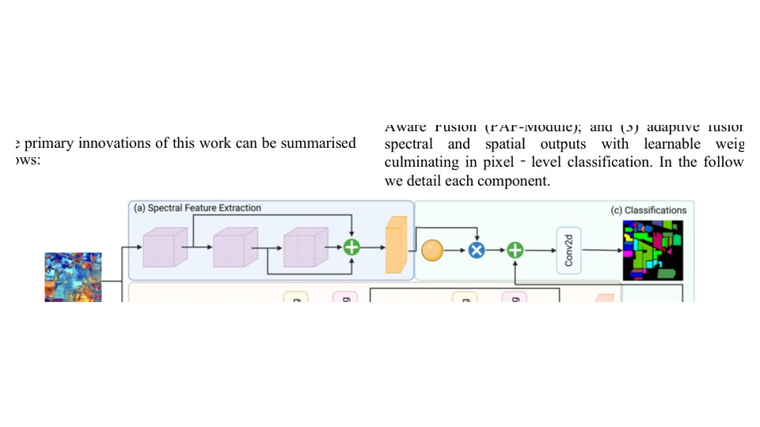

Current affiliation
Hainan University
Department of Artificial Intelligence
School of Information and Communication Engineering
Haikou 570228, Hainan, China

Remote Sensing · Artificial Intelligence
Department of Artificial Intelligence · School of Information and Communication Engineering · Hainan University
Research on hyperspectral image analysis, spectral–spatial representation learning, Mamba/state-space models, multimodal HSI–LiDAR fusion, and fine-grained Earth observation.
Dekai Li is affiliated with the Department of Artificial Intelligence, School of Information and Communication Engineering, Hainan University. His research focuses on intelligent interpretation of hyperspectral and multimodal remote-sensing data. Recent work explores efficient spectral–spatial modeling with Mamba/state-space models, attention and Transformer architectures, multimodal HSI–LiDAR fusion, contrastive learning, and limited-sample fine-grained classification. His research also covers coastal and mangrove remote sensing, where spectral information from hyperspectral imagery is combined with structural cues from LiDAR for robust Earth-observation applications.
Department of Artificial Intelligence
School of Information and Communication Engineering
Haikou 570228, Hainan, China
Your Bachelor's / Master's / PhD degree information has not yet been provided, so this first public version does not guess or invent it.
Once supplied, this card can be replaced with a chronological education timeline.
Classification, spectral–spatial representation learning, high-dimensional feature analysis.
Linear-complexity sequence modeling for spectral dependencies and spatial–spectral fusion.
Cross-modal alignment, adaptive fusion, structural and biochemical feature complementarity.
Attention, Transformer, CNN, contrastive learning, limited-sample and fine-grained classification.

HSI–LiDAR multimodal fusion with Fourier-domain modulation, adaptive cross-modal integration, and supervised modal contrastive alignment for fine-grained mangrove classification.

Decoupled asynchronous spatial–spectral modeling with global-spatial attention and grouped-spectral Mamba.


Coastal HSI analysis integrating spectral/spatial Mamba, multi-scale convolution, attention, and lightweight mixture-of-experts.

Hybrid CNN and dual Swin-Transformer modeling for local–global spectral–spatial representation in coastal HSI classification.

Dual-branch spectral–spatial learning with multi-scale residual blocks and adaptive attention fusion.
Patent No. ZL 2024 1 1967702.7
Publication No. CN 120047816 B
Inventors: 尤佳, 李德凯, 黄梦醒, 毋媛媛, 冯思玲, 张雨
Granted: 23 Jun 2026
Patent No. ZL 2024 1 1949888.3
Publication No. CN 119888329 B
Inventors: 尤佳, 李德凯, 黄梦醒, 毋媛媛, 冯思玲, 张雨
Granted: 25 Nov 2025
Reviewer for journals including:
FACANet accepted by Expert Systems With Applications.
GS-MambaNet published in IEEE JSTARS.
Invention patent on multiscale attention and Transformer-based hyperspectral classification granted.
HyPyraMamba published in IEEE TGRS.
Department of Artificial Intelligence · Hainan University · Haikou, China